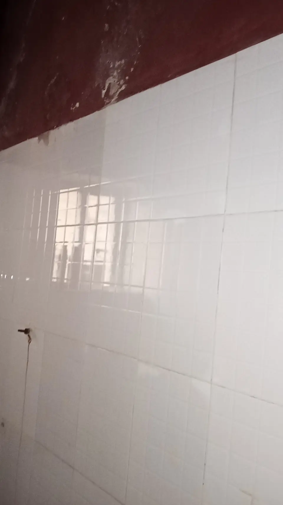
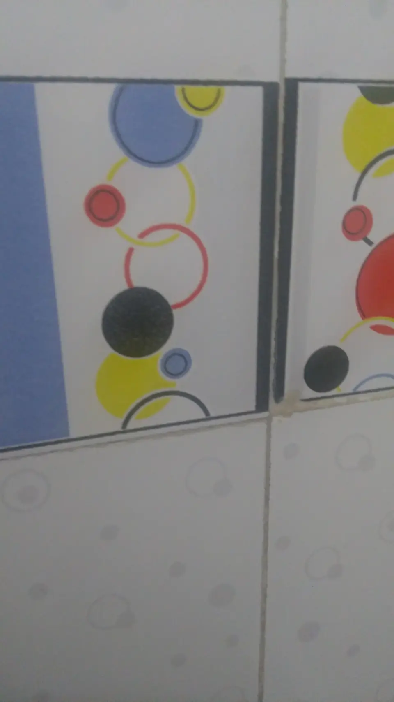
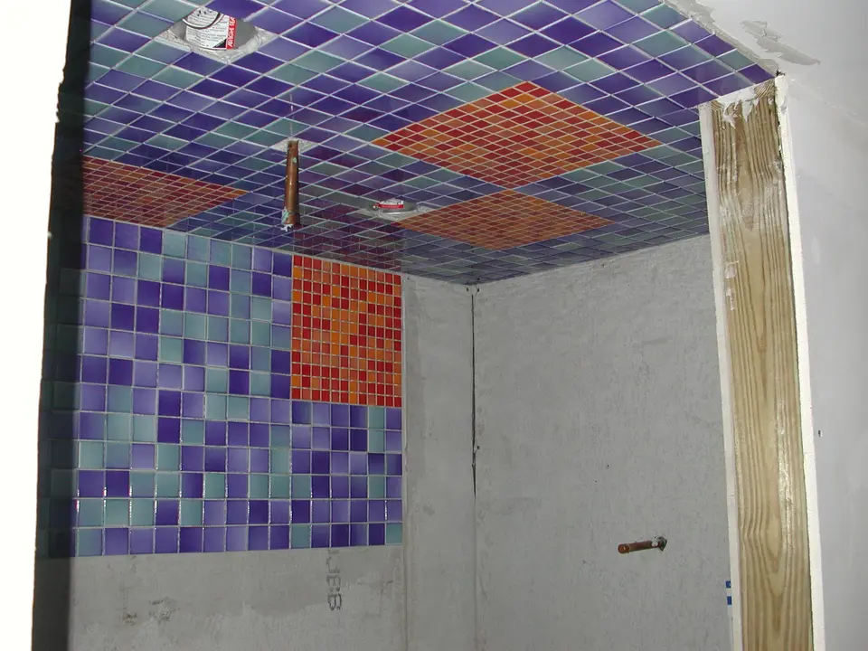

Pose collée de carrelage au sol
Mise en place de grands carreaux céramiques, double encollage soigné et respect scrupuleux des joints de dilatation périphériques.
Démo Carreleur Marseille met son savoir-faire artisanal au service des résidents d Aubagne et de sa périphérie pour transformer leurs espaces de vie. Nous prenons en charge la pose de carrelage céramique grand format dans les villas contemporaines ainsi que la réfection des sols de cuisines ouvertes et terrasses ombragées.
Dans le secteur d Aubagne, les chantiers concernent fréquemment de grandes pièces de jour ouvertes sur l extérieur. Nous utilisons des dalles en grès pleine masse de dimension 80x80 cm ou 120x60 cm qui agrandissent visuellement l espace tout en offrant une résistance remarquable aux passages répétés.
Mise en place de grands carreaux céramiques, double encollage soigné et respect scrupuleux des joints de dilatation périphériques.
Habillage des parois murales, découpes nettes autour de la robinetterie et lissage des angles sortants avec profilés en aluminium brossé.
Étanchéité sous carrelage SPEC avec pose de nappe étanche, évacuation par caniveau affleurant et pente continue sans retenue.
Chaque projet est traité avec rigueur technique et respect des règles de l'art pour assurer une esthétique parfaite.



Notre zone d'activité englobe les communes voisines suivantes pour vous faire bénéficier de notre proximité géographique :
Envie de confier vos travaux de carrelage à un artisan consciencieux et équipé ? Remplissez notre formulaire ou joignez-nous directement par téléphone pour convenir d'une visite de chantier.
Étude sur site à Aubagne sans frais